Chicken scratch. That's what you start with.
I rarely share ugly first drafts. I don't like to reveal how messy and awkward a first draft is. Mosaic is the exception because I ripped it apart and restarted so many times, because I decided to change it—turn it upside down and inside out—I thought you might wonder how it grew into something so strange.
I'm a pantser. That means I write by the seat of my pants, make things up as I go along, wing the plot and characters to some extent. In Mosaic I believe I did more preliminary work with the characters than with any of my previous novels. I created character profiles for Erin and Carlos; I wrote journal entries in Erin's voice; I wrote a "captain's log" for the pirate, Brewster Baker. But the first draft really began as a vision in my head of a group of teenagers on a beach discussing a pirate story, with Erin crouched in the bushes, eavesdropping.
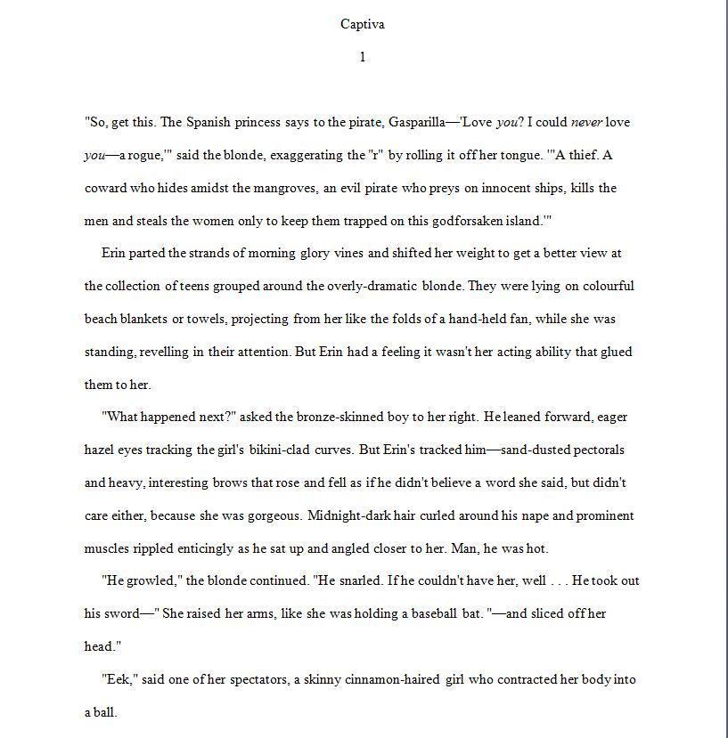
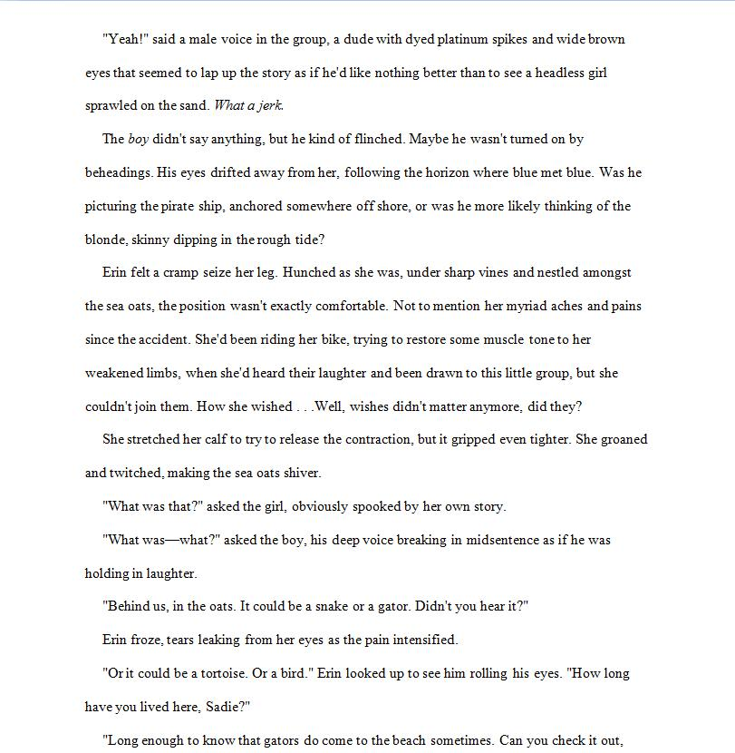
Blah, blah, blah.
Confusing, jumbled, garbage out.
The first thing I recognized was that I'd started in the wrong place. So often that's the case. I've discovered through critiquing and teaching that it's a challenge for many writers to find the appropriate moment to begin a tale.
So I backtracked to the time when Erin arrives at the hotel in Captiva. And I waxed poetic in this draft, or at least added a visual component that would help define the story. But I hadn't discovered her voice yet.
Red is new material.
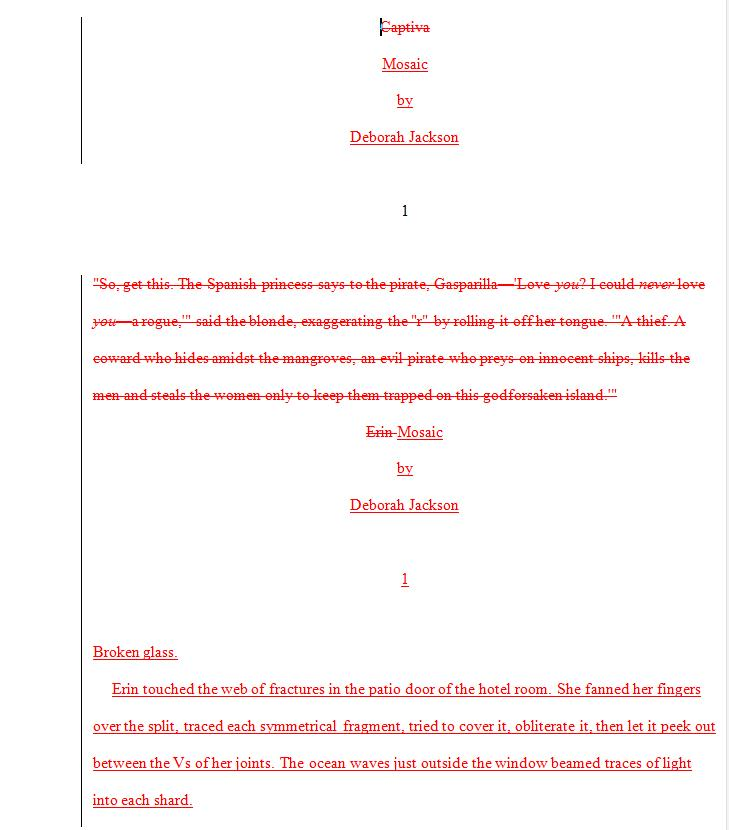
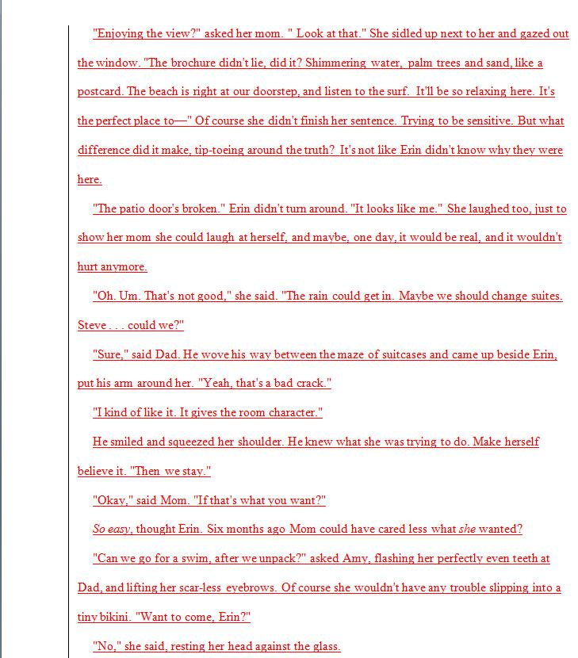
So begins the addition of seven or eight pages prior to the moment described in the first draft; and some adjustments to the moment itself. The entire story also went through alterations to add more thematic elements and repair the intial errors.
Was I happy? Not really. But satisfied enough to distribute the manuscript to my critique group to discover plot holes, character flaws, language issues, etc. They weren't too happy with it either.
"Mundane," "pandering to the Twilight crowd," "secondary characters might have middle grade voices," etc., etc.
What I really didn't like was that it was ordinary.
So . . . rip, revise, replace. I decided to start at the end of the first chapter and then rewind back to the beginning. I also discovered Erin's voice—a hockey player with an attitude. First person point of view seemed the way to go. And I began to write in fragments more and more.
Green is the last sentence in the first chapter repeated.
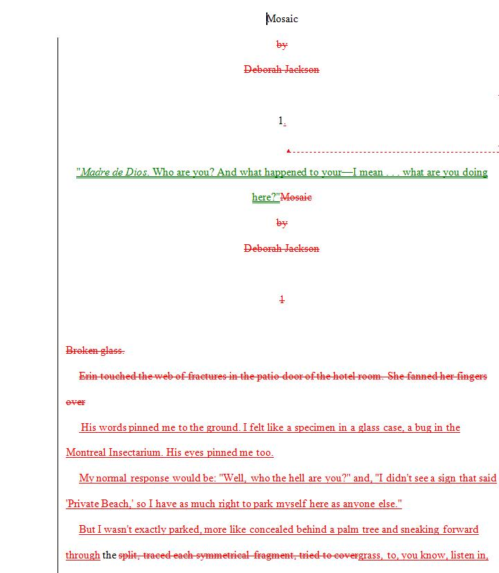
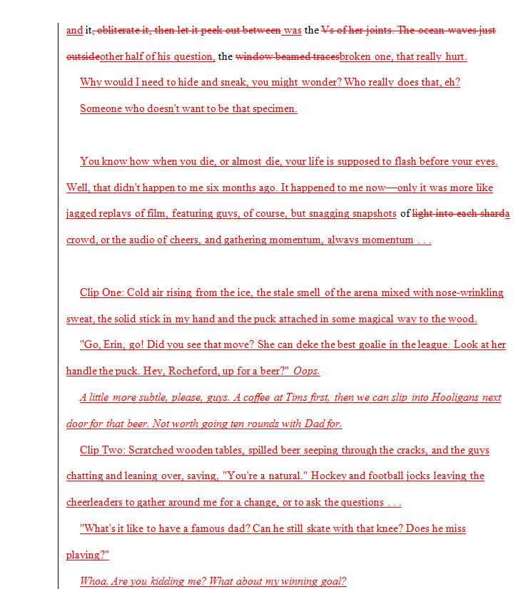
Well, wasn't it perhaps time to send the manuscript to agents?
Some nibbles, no bites.
Well, maybe I could enter the darn thing (and I was beginning to think of it that way after five or six drafts) in a contest.
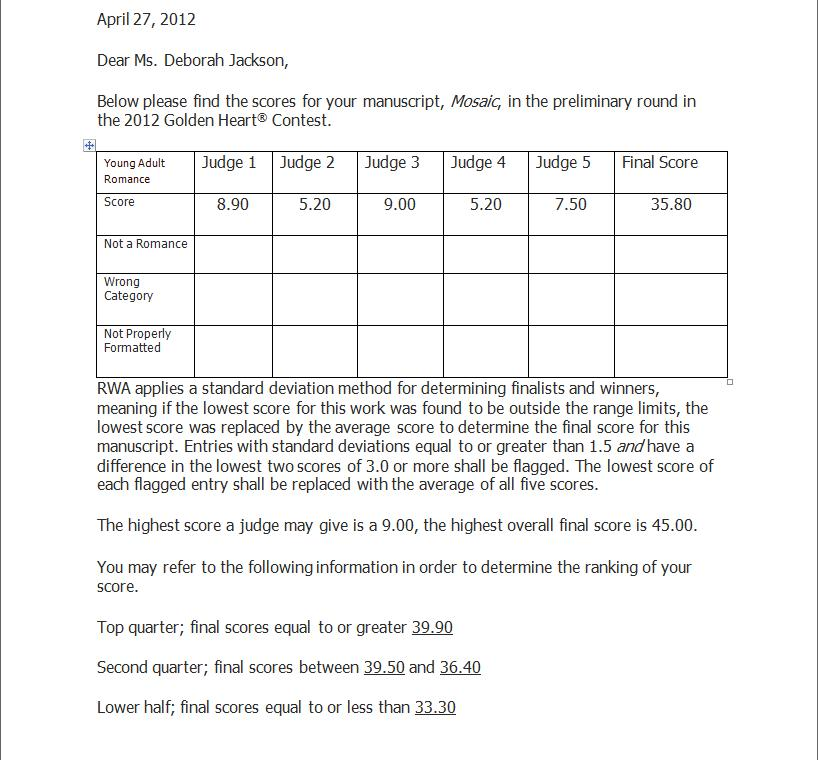
These are typical reactions to my writing. Some scores are high; really high. Some scores are low; quite low. And one in between.
Not good enough. It was different, but not unique.
So it was time to revise and revise again. Drafts seven, eight, nine. Who was counting? What did I want from this novel? I wanted to combine elements of hockey with Erin's experiences, since hockey is integral to her life. I wanted her to drift into side stories that explained her fragile state of mind and would reveal her memories prior to and following the accident. I wanted to add to this concoction a sample of real piracy and relate it to shattered lives in the past. First and foremost, I wanted readers to understand Erin in a deeper way than they ever could in a typical romantic adventure story.
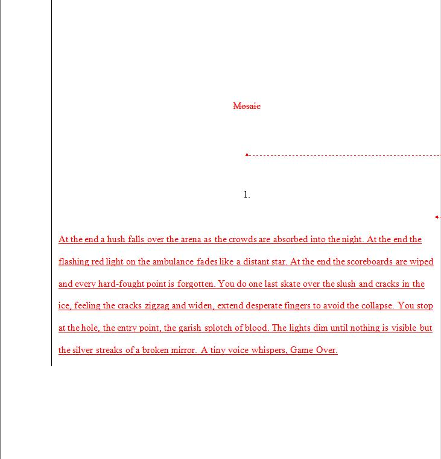
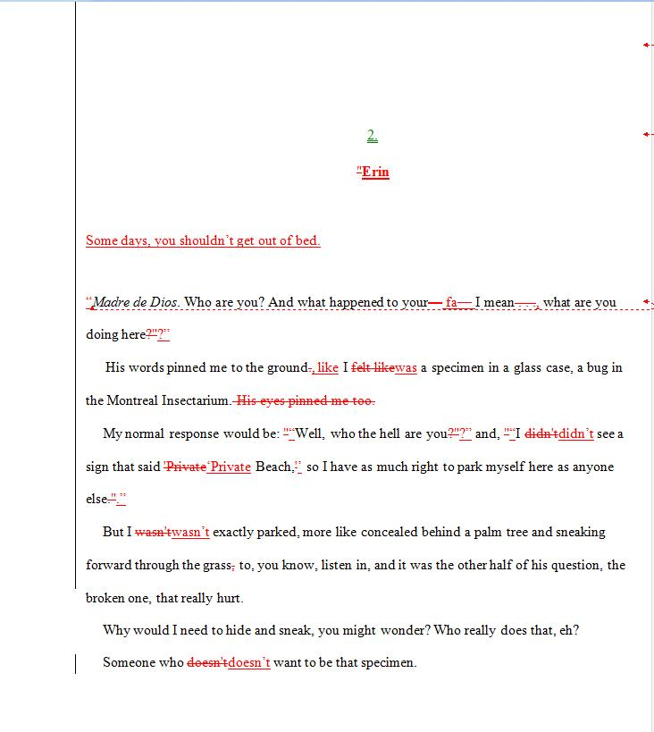
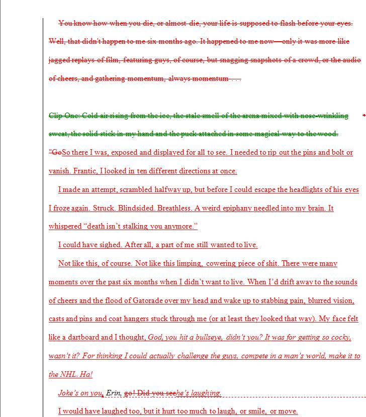
The second page didn't really change too much at this point, but my comparison program picked up formatting alterations.
Soon my changes became confusing, though, so I created a colour-coded map to examine each chapter.
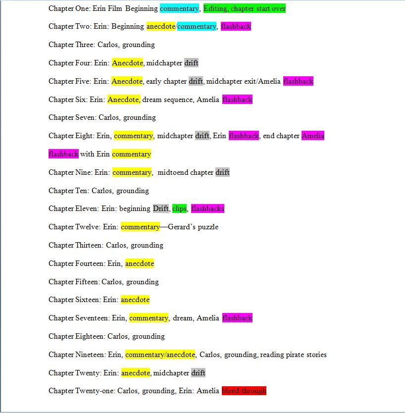
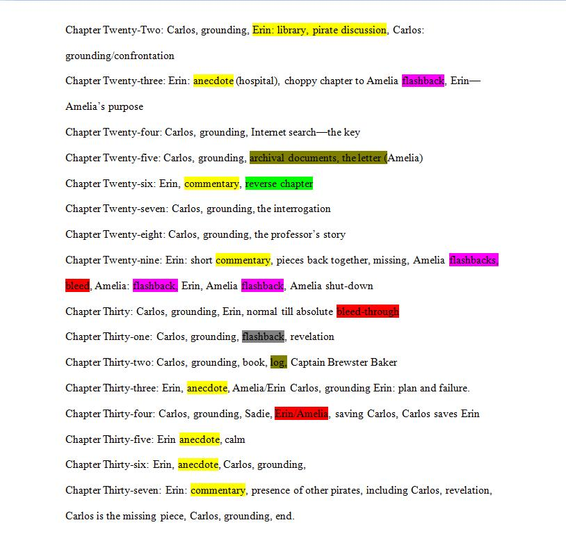
And somewhere in the middle of grinding out revision after revision, I performed a character and plot evaluation following Michael Hauge's Six Stage Plot Structure.
But finally I decided enough is enough. I sent the manuscript—I believe it was Revision Number Eleven—to my editor. And she demanded more changes, of course, along with adding her own magic touch.
But writing isn't always magical, although the stories sometimes seem that way. It's incredibly hard work. And this novel seemed to beg to be written, yet remained elusive for several years. I've given up on stories before, like Ghost in the Piano, but for some reason I just couldn't toss this one away. I hope you'll enjoy it and, if you're experiencing a life-altering trial, it will inspire you to reassemble the shattered pieces, even if they don't fit together the same way anymore.
P.S. The edited version of Chapter One is available to read. However, we have alternating images for temporary viewing that will change once my artist begins the final transformation. We (my editor and I) hope these images will make it easier for the reader to understand the transitions.
Illustration by Jessica Jackson